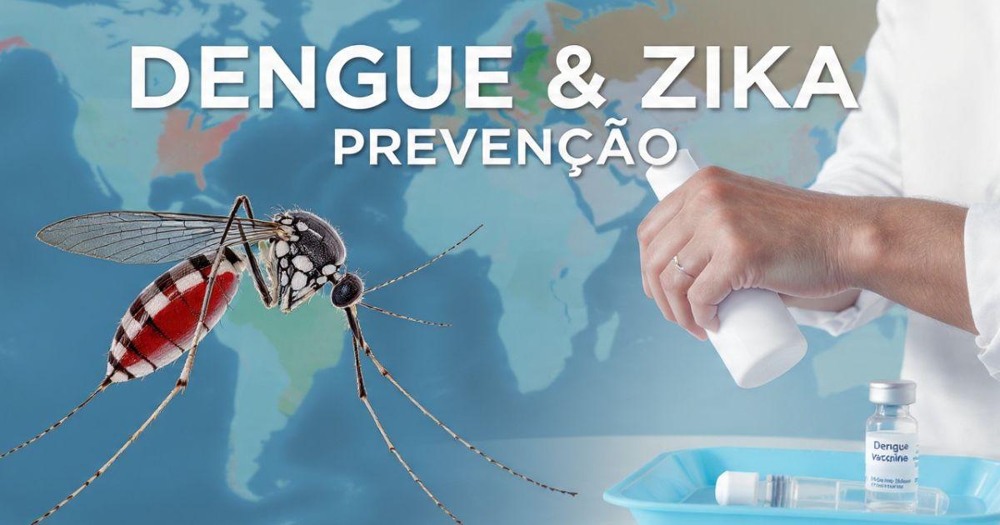

Dengue e Zika em viagens 2026: guia completo de prevenção
Introdução: as doenças transmitidas pelo Aedes aegypti
A Dengue e o Zika são duas das doenças virais mais preocupantes para viajantes que se dirigem a regiões tropicais e subtropicais do mundo. Transmitidas pelo mosquito Aedes aegypti, essas doenças podem causar desde sintomas leves até complicações graves, especialmente em gestantes e pessoas com condições de saúde preexistentes.
Em 2026, a Dengue e o Zika continuam sendo uma preocupação significativa para viajantes que se dirigem a países da América Latina, Ásia, África e Oceania. Com as mudanças climáticas e a expansão do mosquito Aedes aegypti, as áreas de risco estão se ampliando, tornando a prevenção ainda mais importante.
Neste guia completo sobre Dengue e Zika em viagens, você vai encontrar tudo o que precisa saber para se proteger: o que é a Dengue e o Zika, quais são as diferenças entre elas, quais são as áreas de risco no mundo, como prevenir a doença, quais repelentes são eficazes, informações sobre a vacina da Dengue, os sintomas e quando procurar ajuda médica, e dicas valiosas para viajantes.
Nosso objetivo é que você viaje com segurança e tranquilidade, sabendo que está protegido contra essas doenças transmitidas por mosquitos.

O mosquito Aedes aegypti é o principal transmissor da Dengue e do Zika
O que é a Dengue
A Dengue é uma doença viral transmitida pela picada do mosquito Aedes aegypti infectado. É uma das doenças mais comuns em regiões tropicais e subtropicais, afetando milhões de pessoas todos os anos.
Características da Dengue:
- Vírus: Dengue é causada por quatro sorotipos diferentes do vírus (DENV-1, DENV-2, DENV-3, DENV-4).
- Transmissão: Picada do mosquito Aedes aegypti infectado.
- Período de incubação: 4 a 10 dias após a picada.
- Sintomas: Febre alta, dor de cabeça intensa, dor atrás dos olhos, dores musculares e articulares, manchas vermelhas na pele.
- Complicações: Dengue hemorrágica e síndrome do choque da dengue, que podem ser fatais.
Prevenção da Dengue:
- Uso de repelentes com DEET, Icaridina ou IR3535.
- Roupas de mangas compridas e calças.
- Mosquiteiros e telas em janelas.
- Eliminação de água parada (criadouros do mosquito).
O que é o Zika
O Zika é uma doença viral transmitida pela picada do mosquito Aedes aegypti infectado. Embora geralmente cause sintomas leves, o Zika pode ter complicações graves, especialmente para gestantes.
Características do Zika:
- Vírus: Zika é causada pelo vírus Zika (ZIKV).
- Transmissão: Picada do mosquito Aedes aegypti infectado. Também pode ser transmitido sexualmente e de mãe para feto.
- Período de incubação: 3 a 14 dias após a picada.
- Sintomas: Febre baixa, manchas vermelhas na pele, conjuntivite, dores musculares e articulares, dor de cabeça.
- Complicações: Microcefalia em recém-nascidos (infecção durante a gravidez), síndrome de Guillain-Barré em adultos.
Prevenção do Zika:
- Uso de repelentes com DEET, Icaridina ou IR3535.
- Roupas de mangas compridas e calças.
- Mosquiteiros e telas em janelas.
- Eliminação de água parada.
- Gestantes devem evitar viajar para áreas com surto de Zika.
Diferenças entre Dengue e Zika
Embora sejam transmitidas pelo mesmo mosquito, a Dengue e o Zika têm diferenças importantes:
| Característica | Dengue | Zika |
|---|---|---|
| Febre | Alta (> 38,5°C) | Baixa (febre leve) |
| Conjuntivite | Rara | Comum (olhos vermelhos) |
| Dores musculares | Intensas | Leves a moderadas |
| Manchas na pele | Presentes | Presentes |
| Complicações graves | Dengue hemorrágica | Microcefalia, Guillain-Barré |
| Transmissão sexual | Não | Sim |
Áreas de risco no mundo
A Dengue e o Zika são endêmicos em várias regiões do mundo. Conhecer as áreas de risco é essencial para planejar a prevenção.
América Latina e Caribe:
- Brasil, Colômbia, México, Venezuela, Peru, Equador, Argentina (norte).
- Caribe: República Dominicana, Porto Rico, Cuba, Jamaica, etc.
Ásia:
- Sul da Ásia (Índia, Bangladesh, Paquistão, Sri Lanka).
- Sudeste Asiático (Tailândia, Vietnã, Filipinas, Indonésia, Malásia, Singapura).
África:
- África Subsaariana (Nigéria, Quênia, Tanzânia, Moçambique, etc.).
- África Ocidental e Central.
Oceania:
- Papua Nova Guiné.
- Ilhas do Pacífico (Fiji, Samoa, etc.).
Dica: Consulte o site da OMS (World Health Organization) ou do CDC (Centers for Disease Control and Prevention) para obter informações atualizadas sobre áreas de risco antes de viajar.
Como prevenir Dengue e Zika
A prevenção da Dengue e do Zika envolve principalmente a proteção contra picadas de mosquitos.
Medidas de proteção pessoal:
- Use repelentes: Aplique repelente com DEET, Icaridina ou IR3535 nas áreas expostas da pele.
- Vista roupas adequadas: Use roupas de mangas compridas e calças, especialmente durante o dia (horário de atividade do Aedes aegypti).
- Use mosquiteiros: Dormir sob um mosquiteiro tratado com inseticida é uma das medidas mais eficazes.
- Use inseticidas: Use sprays inseticidas ou repelentes elétricos nos quartos.
Medidas ambientais:
- Elimine água parada: O Aedes aegypti se reproduz em água parada (vasos de plantas, pneus, garrafas, caixas d'água, etc.).
- Use telas em janelas e portas.
Repelentes eficazes contra Aedes aegypti
Os repelentes são uma das medidas mais importantes de proteção contra o mosquito Aedes aegypti.
Principais ingredientes ativos:
- DEET: O repelente mais eficaz e testado. Concentração de 20-50% oferece proteção por 2-6 horas.
- Icaridina (Picaridina): Uma alternativa eficaz ao DEET, com menos odor. Concentração de 20% oferece proteção por 4-6 horas.
- IR3535: Eficaz contra mosquitos, mas com proteção menos duradoura que o DEET.
- Óleo de eucalipto-limão: Uma alternativa natural, mas com proteção mais curta.
Como aplicar repelente:
- Aplique em áreas expostas da pele (braços, pernas, pescoço, rosto).
- Aplique após o protetor solar.
- Reaplique a cada 2-6 horas, conforme a necessidade.
- Evite aplicar em feridas ou mucosas.
Vacina da Dengue: o que você precisa saber
A vacina da Dengue é uma ferramenta importante para a prevenção da doença. Entenda como funciona:
Vacina Qdenga (TAK-003):
- Indicação: Aprovada para pessoas de 4 a 60 anos.
- Esquema vacinal: 2 doses com intervalo de 3 meses.
- Proteção: Protege contra todos os 4 sorotipos da Dengue.
- Eficácia: Cerca de 80% de eficácia na redução de casos de Dengue.
- Disponibilidade: Disponível na rede pública (SUS) em algumas regiões e na rede privada.
Vacina Dengvaxia:
- Indicação: Apenas para pessoas que já tiveram Dengue, com idade entre 9 e 45 anos.
- Esquema vacinal: 3 doses com intervalo de 6 meses.
Importante: A vacina não substitui as medidas de prevenção (uso de repelente, etc.).
Sintomas e quando procurar ajuda
Conhecer os sintomas da Dengue e do Zika é fundamental para buscar tratamento precoce.
Sintomas da Dengue:
- Febre alta (acima de 38,5°C).
- Dor de cabeça intensa.
- Dor atrás dos olhos.
- Dores musculares e articulares.
- Manchas vermelhas na pele.
- Náuseas e vômitos.
Sintomas do Zika:
- Febre baixa.
- Manchas vermelhas na pele.
- Conjuntivite (olhos vermelhos).
- Dores musculares e articulares.
- Dor de cabeça.
Quando procurar ajuda médica:
- Se você estiver em uma área de risco e apresentar febre, dor de cabeça ou manchas na pele.
- Se os sintomas persistirem por mais de 48 horas.
- Se você tiver sintomas graves (vômitos persistentes, dor abdominal intensa, sangramento).
Dicas para viajantes
- Consulte um médico antes de viajar — Faça uma consulta de medicina do viajante pelo menos 4-6 semanas antes da viagem.
- Leve repelente na bagagem — Leve repelente com DEET ou Icaridina.
- Use roupas de proteção — Roupas de mangas compridas e calças.
- Fique atento aos sintomas — Monitore sua saúde durante e após a viagem.
- Gestantes devem evitar áreas de risco — Gestantes devem evitar viajar para áreas com surto de Zika.
A Dengue e o Zika são doenças graves, mas podem ser prevenidas com medidas simples: use repelente, roupas adequadas e mosquiteiro, e elimine água parada. Consulte um médico antes da viagem e monitore sua saúde. Gestantes devem evitar áreas com surto de Zika. Com essas precauções, você pode viajar com segurança para áreas de risco!
❓ Perguntas Frequentes sobre Dengue e Zika
Sim. Ambas as doenças são transmitidas pelo mosquito Aedes aegypti. O mesmo mosquito pode transmitir a Dengue, o Zika e a Chikungunya.
Os repelentes com DEET (20-50%) ou Icaridina (20%) são os mais eficazes contra o Aedes aegypti. Oferecem proteção por 2-6 horas e são recomendados para áreas de risco.
Sim. A vacina Qdenga está disponível para pessoas de 4 a 60 anos, com 2 doses. A vacina Dengvaxia é indicada apenas para pessoas que já tiveram Dengue. A vacinação deve ser feita com orientação médica.
Não. Atualmente, não há vacina disponível para o Zika. A prevenção é baseada em medidas de proteção contra picadas de mosquitos.
Sim, o Zika pode ser transmitido sexualmente de pessoa para pessoa. Recomenda-se usar preservativo em áreas com surto de Zika, especialmente para gestantes.
Gestantes devem evitar viajar para áreas com surto de Zika devido ao risco de microcefalia no feto. Consulte um médico antes de planejar a viagem.
Os sintomas da Dengue geralmente duram de 2 a 7 dias. A febre costuma cair após 3-5 dias. Em casos graves, a recuperação pode levar mais tempo.
Sim. O Zika pode causar microcefalia em recém-nascidos (infecção durante a gravidez) e síndrome de Guillain-Barré em adultos. Por isso, a prevenção é fundamental.